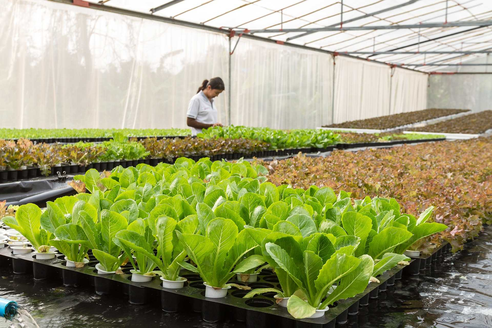

Pertanian Organik Merupakan teknik budidaya Pertanian yang berorientasi pada pemanfaatan bahan - bahan alami (lokal) tanpa menggunakan bahan - bahan kimia sintesis. Pertanian Organik
bertumpu pada peningkatan produksi, pendapatan serta berwawasan lingkungan dan berkelanjutan.